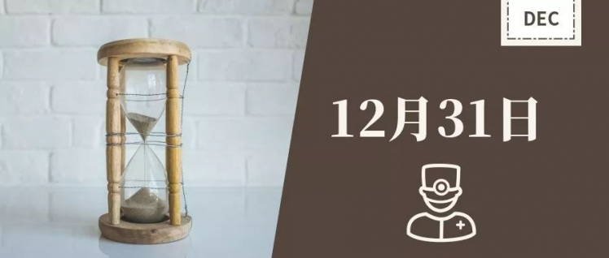
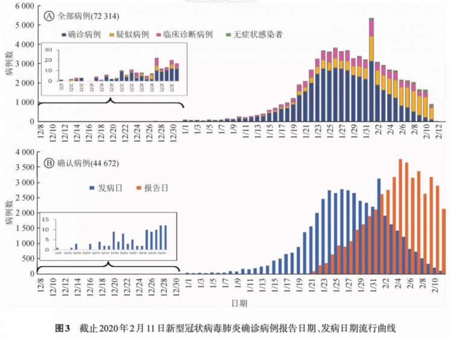
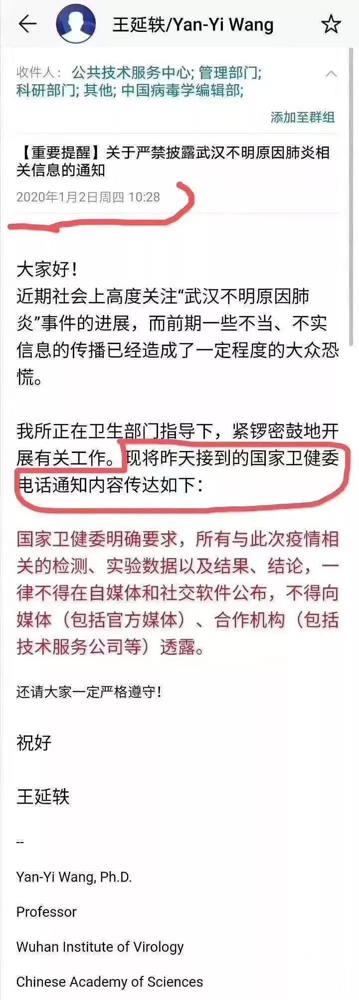

特别报道 | 假如武汉的警铃有机会被拉响，可以是哪天？
原文链接 备份链接 这条时间线将表明，疫情在早期是如何被发现却又最终被轻视。 记者 | 陈锐、许冰清 制图 | 程 星 2月7日凌晨，因接诊而致感染的武汉市中心医院眼科医生李文亮去世。 回溯疫情早期，2019年12月30日傍晚，武汉卫健 …

- 编者按 -
回顾新冠肺炎疫情，可以看到一个关键日期，2019年12月31日。这一天，国家卫健委专家组在武汉开会，香港提出对疫情的关注。如果这天会议确定要采取行动，包括不宣传但行动的外松内紧，而不是掉以轻心，可能对于疫情发展会有很大影响。那么，12月31日，我们有机会吗？
本文试图总结经验，看我们在体制上可以有何改革、在做事方式上有何根本性的改变。疾病控制这样的大事，处理方式应该更接近救火队，而不应该接近法庭判死刑的过程，后者可以有时间，前者需要快速，疑病从有。
本文试图提出三个疑问：
1. 中国疾控中心的网络直报系统或传染病信息系统，有没有发挥作用？究竟何时发挥作用？为何多个信源呈现出来的信息是矛盾的？
2. 2019年12月31日，武汉已经对病人采取隔离措施，但为何未要求医护人员采取防护措施？即使是外松内紧，内紧体现在哪里？
3.2019年12月31日，为何香港已经开始提醒公众防护，为何武汉却没有提醒公众防护？
下面这张图，回顾了截至2月11日国内新冠肺炎的全部病例。如果在2019年12月31日，武汉能够有强有力的措施阻止传播，新冠肺炎可能被扑灭，而不是今天的大流行。

图源：中华流行病学杂志，2020.
撰文 | 陈晓雪
责编 | 李晓明
● ● ●
01
回到2019年12月30日
2019年12月31日，根据武汉当地媒体的报道，20万武汉市民和游客参加了跨年的长江灯光秀。
当日的媒体上并没有提及的是：这一天，世卫组织驻华代表处获悉在中国湖北省武汉市发现不明原因肺炎病例。这一天，国家卫健委第一批专家组抵达武汉，调查武汉的不明肺炎。
对于国家卫健委第一批专家组来汉，据经济学家华生2月16日的文章，中国疾控中心主任高福看到网络上流传的不明肺炎信息，从而起到了重要推动作用。
然而，据《知识分子》2月17日获得的一份流出的报告显示，湖北省疾控中心和武汉市疾控中心以及几个区级的疾控中心早在2019年12月29日就调查武汉市不明肺炎的情况，并形成了报告。
那么，两个不同来源的信息让人不免疑惑：中国疾控中心是否收到了这份报告？国家卫健委第一批专家组对武汉当地的疫情应对给出了怎样的指导意见？
回到2019年12月30日。
这一天，一个叫李文亮的眼科医生在班级群里提醒同学—— “确诊了7例SARS”。
同样在这一天，经济学家华生上述的文章披露：“去年12月30日……由于高福有在睡前在网络上搜索有关传染病信息的习惯，偶然发现了有关武汉市卫健委内部发出了不明原因肺炎紧急通知的相关传闻，这让他大吃一惊。”
“因为他去年还在政协会上拍着胸脯说，现在有了这个疾病直报系统，象SARS那样的大疫情不会再发生。所以他随即打电话给武汉市疾控中心负责人了解情况，在得到肯定的答复之后，立即问他们案例早已超过三例必报的预警门槛，为什么这么多天来从未向网络系统直报？都这样的话，国家重金打造的网络直报系统还有什么用？”
华生说，据知情人透露，从对方含糊的解释中，高福感到问题不小，自己责任重大，连夜给国家卫健委多名领导分别打电话报警。“据媒体报道，国家卫健委也可算行动迅速，第二天就由分管领导带领工作组、专家组到达武汉。”
华生认为，据这个消息，高福实际上是12月30号武汉几名医生在朋友圈发消息提醒的同一天晚上， “体制内最高级别的报警人”。
就在这一天，湖北省已经有一份不明肺炎疫情的流调报告出炉。但直到2月17日，报告流出。
这份报告显示，湖北省、市、区疾控中心联合调查组在2019年12月29日已就华南海鲜市场多例肺炎病例情况进行调查，并在12月30日形成了报告。
“2019年12月29日下午，接省、市卫健委通知，近期省中西医结合医院、市中心医院后湖区等医院收治多例症状相似的肺炎病例，有华南海鲜市场暴露史”，报告披露，湖北省疾控中心、武汉市疾控中心会同江汉、硚口、东西湖区疾控中心赴现场开展流行病学调查、标本采集检测、院感控制等处置工作。
根据《中国新闻周刊》的报道，2019年12月28日，武汉市中心医院后湖院区急诊科接诊了4例和华南海鲜市场有关的发热病人。到2020年1月1日前后，医院共收治了7例“不明原因肺炎”病例。2019年12月29日，武汉市中心医院急诊科向医院公共卫生科上报了这7例发热病人中急诊科收治的4例。公共卫生科回复称，已上报江汉区疾控中心。在急诊科上报的4例病例中，有一对母子，儿子在华南海鲜市场工作，母亲去海鲜市场送饭，并没有接触过华南海鲜市场的物品，但依然染病，而且病情较重。武汉市中心医院急诊科主任艾芬告诉《中国新闻周刊》，她当时就判断这个病可能 “人传人”。
与此同时，湖北省中西医结合医院也陆续收治了7名不明肺炎的病人，该院呼吸与重症医学科主任张继先医生和院方也将病人的情况在12月27日上报给了江汉区疾控中心，并在12月29日上报给省、市卫健委的疾控处。
2019年12月29日， “省卫健委疾控处和市卫健委疾控处快速反应，指示武汉市疾控中心、金银潭医院和江汉区疾控中心，来到医院，开始流行病学调查” （据《长江日报》2020年2月2日的报道）。
前述12月30日完成的不明肺炎流调报告称，累计搜索病例25例，完成流行病学调查核实20例，其中华南海鲜市场西区12个摊位、东区1个摊位，为17人，另外市场非固定摊位工作人员3人。
报告介绍，有两个家庭成员有在该市场共同暴露，其中一个患者有4个家庭成员感染，一个患者家庭有2个家庭成员感染。
在时间分布上，调查病例的最早发病时间为12月12日，最后一例为12月25日。
报告对于下一步处置的建议是：
（一）市场监督部门加强该市场卫生环境综合整理，切实做好环境清洗消毒，日常通风等工作。
（二）卫生健康部门进一步加强该市场从业相关人群的不明原因疾病的检测工作，做好对可疑患者的早发现、早排查、早处置工作。
（三）各医疗机构进一步规范发热门诊的运行和预诊分诊，早期明确诊断和规范治疗，做好感染控制工作。
02
报告应汇报给谁？
假设上述内部流出报告为真，那么应该汇报给哪些机构？
在我国，国家、省市、区县都有各级的疾控中心，隶属于各级卫健委，而各级卫健委是各级政府的组成部门。据21世纪经济报道，地方的疾控中心主要向当地的卫健委和政府汇报。
也就是说，当这份报告形成后，武汉市卫健委、武汉市政府、湖北省卫健委和湖北省政府是汇报对象之一。
而根据中国疾控中心官网的《传染病信息报告管理规范》，各级疾病预防控制机构要及时将疫情分析结果以信息、简报或报告等形式向上级疾病预防控制机构和同级卫生计生行政部门报告，并反馈到下一级疾病预防控制机构。
也就是说，中国疾控中心也应该是汇报的对象之一。
另根据《经济观察报》报道，中国疾控中心在2003年SARS疫情后，建立了一套综合的监测系统，最先建立起来的是传染病网络直报系统，横向覆盖全国，纵向可达乡镇医生卫生院。“只要发现传染性病例、尤其是不明原因肺炎，医院都要直接在这套系统上报告病例，包括中国疾控中心在内的各级疾控部门都能第一时间了解情况。”中国疾控中心原副主任杨功焕介绍说。
而据《第一财经》报道，这套系统也设置了针对不明原因肺炎PUE（Pneumonia of Unknown Etiology）的直报。
如果在武汉发生了多例不明原因的肺炎，而且比较集中，杨功焕在接受《经济观察报》采访时表示，按照这个报告体系，中国疾控中心应该会收到相关的报告。她认为，中国疾控中心即使没有人下去调查，也可以发现武汉出现的情况。“按道理，这个机制下，在这个时候中国疾控中心可能会派人，地方省疾控或者市疾控也有权力派人下去做流行病学调查，确认病情，然后来报告。同时，医院在这种情况下也应该实施隔离的。”
但是，根据华生的文章，作为中国疾控中心主任，高福在2019年12月30日未收到湖北或武汉任何关于不明原因肺炎的报告，对湖北省、市、区三级疾控中心的这一报告显然也不知情。
一位业内人士评论说，如果这份省、市、区疾控中心联合调查组形成的报告没有报送中国疾控中心，那就是体制的问题，需要改进，不能只报当地政府，而不报中国疾控中心；如果这份报告抄送了中国疾控中心，而中国疾控中心主任自己不知情，那就是中国疾控中心的问题。
03
2019年12月31日
这一天，国家卫健委专家组抵达武汉。
直到今天，我们仍无法从官方渠道获悉这批专家去了哪里、对于武汉的疫情给出了怎样的疫情应对办法，以及处置工作的指导意见的详情，只能根据媒体的零星报道或一些新闻稿去还原当时的情况。
据《中国新闻周刊》报道，第一批国家卫健委专家组成员有北京地坛医院感染性疾病诊疗与研究中心首席专家李兴旺、中日友好医院呼吸与危重症医学科主任曹彬，还有中国疾控中心传染病预防控制国家重点实验室主任徐建国。
据中国疾控中心官网转载的新华社的报道，2019年12月31日，根据中国疾控中心要求，病毒病所（即中国疾病预防控制中心病毒病预防控制所）选派专家组赴武汉参加疫情防控。于2020年1月1日上午赴华南海鲜市场，针对病例相关商户及相关街区集中采集环境样本515份，运送至中国疾控中心病毒病所进行检测；1月12日，病毒病所专家再次在华南海鲜市场采集野生动物贩卖商铺相关标本70份，并转运至实验室进行检测。
据财新的报道，第一批专家到武汉金银潭医院做过调查，并做了一套“不明原因的病毒性肺炎”的诊断标准，要有华南海鲜市场接触史，要有发烧症状，要做全基因组测序，这三条标准都达到了，才能确诊。
据《大公报》报道，中国疾病预防控制中心传染病预防控制所所长徐建国1月4日表示，从目前看，未发现明显的人传人证据，未发现医务人员感染，且没有发生死亡案例，说明病毒威胁水平有限。徐建国还强调，中国的传染病控制有多年的积累，绝不会出现因为春运发生大扩散的可能性。
2019年12月31日，在国家卫健委专家组到达武汉的当天，武汉市卫健委发布了第一份关于肺炎疫情的通告，表示到目前为止调查发现27例病例，其中7例病情严重，并称所有病例已隔离治疗，密切接触者的追踪调查和医学观察正在进行中，“到目前为止调查未发现明显人传人现象，未发现医务人员感染”，对病原的检测及感染原因的调查正在进行中。
通告还透露，武汉同济医院、省疾控中心、中科院武汉病毒所、武汉市传染病医院及武汉市疾控中心等单位等临床医学、流行病学、病毒学专家进行了会诊，专家从病情、治疗转归、流行病学调查、实验室初步检测等方面情况分析认为上述病例系病毒性肺炎。
而武汉市卫健委发布的第二份关于疫情的通告，也就是在2020年1月3日，首次提出了“不明原因的病毒性肺炎”的概念，表示符合不明原因的病毒性肺炎诊断患者有44例，其中重症11例，均在武汉市医疗机构接受隔离治疗。这份通告也提到，国家和省卫生健康委派出工作组和专家组赴武汉市，指导当地开展疫情应对和处置工作。“初步调查表明，未发现明显的人传人证据，未发现医务人员感染。”这份公告，中国疾控中心进行了全文转载。
据《三联生活周刊》报道，武汉的一位医生将武汉卫生系统初期对新冠肺炎的举措解读为 “内紧外松”： “紧” 是及时发现病例，并做了严格的隔离和应对； “松” 则是没有大范围地公告社会，让大家对疾病提起警惕，也没有号召大家戴口罩。
内紧外松，也可以用来解读中国疾控中心应对疫情的策略。冯子健在接受《新京报》采访时表示，中国疾控中心从最早开始，就把新冠肺炎当作有高度传染性的疾病来对待，第一时间采取了密切接触者管理等措施，但公布信息是“谨慎的”，从开始的“未发现明显人传人现象”到“不能排除有限人传人的可能”，需要一个过程，因为对疾病的认识有个过程，和病例诊断、实验室检测结果逐步用于病人的甄别有关。
然而，根据疫情上报第一人、被记大功的张继先和其他医生接受媒体采访的内容，尽管武汉市卫健委表示对病人进行隔离治疗，但对一线的医护人员似乎并没有给出提高防护等级的建议。
在《长江日报》的报道中，张继先在2019年12月27日和29日连续报告不明肺炎的情况后，医院给她的科室批了N95专业防护口罩，但没有防护服，因此张继先安排同事在网上订购了细帆布的白色工作服用作防护，并将这些工作服一直穿到2020年1月20日——钟南山明确新冠肺炎能够人传人。此后，医院给他们提供了三级防护服。
根据《中国新闻周刊》的报道，上报了不明肺炎情况的武汉市中心医院，则在1月2日起，要求医务人员之间不许公开谈及病情，不得通过文字、图片等可能留存证据的方式谈论病情，病情只能在交接班必要的时候口头提及。艾芬在1月1日起只得要求自己科室的医护人员先戴起了N95口罩。
在1月2日同一天，中科院武汉病毒所的内部邮件显示，接到国家卫健委的电话通知，不得对外透露任何疫情信息。

据央视网报道，张继先所在的科室无一例医护人员感染，无患者交叉感染。
而在武汉市中心医院，根据《中国新闻周刊》的报道，截至1周多前，其医院职工达到新冠肺炎临床确诊标准的已达230多人，其中130人住院，100多人居家隔离，多位科主任与院领导“中招”。
根据中国疾控中心2月17日发表的报告，截至2020年2月11日，在为新冠肺炎患者提供诊治服务的422家医疗机构中，共有3019名医务人员感染了新型冠状病毒，其中1716名确诊病例，而在确诊病例中，武汉就有1080例，占全国医务人员发病总数64.0%，死亡的5名医护人员均发生在武汉。
报告指出，可能存在非职业暴露造成的感染，但迄今为止，医务人员感染以及防护失败的具体原因仍有待深入调查。
04
几个问题
围绕2019年12月31日前后，关于疫情，还有很多未解之谜。
据武汉市长周先旺的表述，国家卫健委在2019年12月30日接到报告后组织了专家组前往武汉。一个问题是，国家卫健委是先接到谁的报告后组织专家组的？是中国疾控中心主任高福的报告还是武汉市卫健委的报告？
而中国疾控中心主任在意识到网络直报系统“失灵”后，从2019年12月31日到2020年1月20日，国家卫健委和中国疾控中心是如何了解武汉疫情的？是否有第一时间恢复网络直报系统？
2020年1月31日，中国疾控中心副主任冯子健接受《新京报》采访时表示，在本次新型冠状病毒肺炎疫情中，“网络直报系统的启用没有那么早”。在回答关于何时知道医务人员感染的提问时，冯子健说，是19日钟南山到武汉后，当地、国家级专家把结果告诉了钟南山，直到钟南山20日晚上到北京后，接受媒体采访披露有医务人员感染，接着武汉市卫健委作了披露。如果此时冯才知道医务人员被感染，说明截止到1月20日，网络直报系统并未发挥作用，而中国疾控中心信息闭塞问题可谓十分严重。
但是，在2020年2月17日发表的论文“新型冠状病毒肺炎流行病学特征分析”披露，2019年12月31日，全国各级CDC联合开始了新冠肺炎的调查，论文也是选取了“截至2020年2月11日传染病信息系统中报告的所有中国内地COVID-19病例”。说明传染病信息系统似乎还是发挥了作用。值得注意的是，冯子健也是该文作者之一。
根据中国疾控中心官网，中国疾控中心负责的传染病网络直报系统新型冠状病毒感染的肺炎动态监测功能在2020年1月24日上线，可实现新型肺炎的病例个案信息、诊治信息、感染来源等相关信息的快速报告。这是否说明，在新冠肺炎疫情中，传染病网络直报系统在1月24日才发挥作用？
这些问题，都需要更多的信息披露来回应公众的疑问。
2019年12月31日，武汉市将从2019年12月16日住院的疑似患者转移到金银潭医院进行隔离；世界卫生组织中国办事处接到报告，武汉出现不明原因肺炎；香港食物及卫生局开始部署防控措施，加强出入境口岸健康监察，并通知前线医护人员提高警觉。
而此时的武汉，采购年货的人流熙来攘往，百步亭社区的万家宴正在紧锣密鼓筹备，武汉市两会即将在5天后召开，半个月后开始的春运，数百万人流将从九省通衢的武汉流出。
“防疫工作是救火，看到苗头出现就要往上扑，不能说因为不能打救火铃，就不要扑上去，就当成没火情，怎么可以这样？你当做没火情，真有火的时候不就烧起来了吗？就是红布扑上去有什么不可以的呢？你不需要叫消防车，先把红布给扑掉啊，你现在把火苗当成了红布，你不就错了吗？” 一位资深人士评论说。
参考资料：
华生：如果群殴高福是搞错了对象——我们要从新冠病毒疫情真正总结什么（上），2020年2月16日. https://card.weibo.com/article/m/show/id/2309404472629854601490?_wb_client_=1&from=groupmessage&isappinstalled=0
中国疾控中心原副主任杨功焕：SARS之后国家重金建立传染病网络直报系统，应关注其在这次疫情中如何运行，经济观察报，2020年1月30日.
http://www.eeo.com.cn/2020/0130/375225.shtml
中疾控独家回应：“人传人”早有推论，保守下结论有原因. 新京报. 2020年1月31日
http://www.bjnews.com.cn/news/2020/01/31/682224.html
最早上报疫情的她，怎样发现这种不一样的肺炎. 长江日报. 2020年2月2日. https://mp.weixin.qq.com/s/E_FMh8T31ZnTFhi-5wZCbw
“新型冠状病毒感染的肺炎疫情防控工作”新闻发布会第五场. 2020-01-26
http://wjw.hubei.gov.cn/fbjd/dtyw/202001/t20200130_2016542.shtml
中国疾控中心在武汉华南海鲜市场检出大量新型冠状病毒. 新华社. 中国疾控中心转载. 2020年1月26日. http://www.chinacdc.cn/yw_9324/202001/t20200127_211469.html
传染病网络直报系统新型冠状病毒感染的肺炎动态监测功能上线. 中国疾控中心. 2020年1月25日. http://www.chinacdc.cn/zxdt/202001/t20200125_211441.html
武汉市卫健委关于当前我市肺炎疫情的情况通报.2019年12月31日.
http://wjw.wuhan.gov.cn/front/web/showDetail/2019123108989
四大ICU主任详解病毒，来自最前线的防治之策. 财新周刊. 2020年2月10日. http://weekly.caixin.com/2020-02-07/101512870.html
中国疾病预防控制中心新型冠状病毒肺炎应急响应机制流行病学组. 新型冠状病毒肺炎流行病学特征分析[J]. 中华流行病学杂志, 2020, 41(2): 145-151
专家：汉港病例未见直接关係. 大公报. 2020年1月5日. http://www.takungpao.com/news/232108/2020/0105/400593.html
武汉市卫健委关于不明原因的病毒性肺炎情况通报. 2020年1月3日.
http://wjw.wuhan.gov.cn/front/web/showDetail/2020010309017
独家 | 武汉不明原因肺炎已做好隔离 检测结果将第一时间对外公布. 第一财经. 2019年12月31日.https://www.yicai.com/news/100451932.html
武汉病毒所全力开展新型冠状病毒肺炎科研攻关. 2020年1月29日. http://www.whiov.ac.cn/xwdt_105286/zhxw/202001/t20200129_5494574.html
亲历者讲述：武汉市中心医院医护人员被感染始末. 中国新闻周刊. 2020年2月17日.
https://mp.weixin.qq.com/s/1zNY2YXy75snzwX3Tg09Cg
参与讨论
0 条评论
原文链接 备份链接 这条时间线将表明，疫情在早期是如何被发现却又最终被轻视。 记者 | 陈锐、许冰清 制图 | 程 星 2月7日凌晨，因接诊而致感染的武汉市中心医院眼科医生李文亮去世。 回溯疫情早期，2019年12月30日傍晚，武汉卫健 …
原文链接 备份链接 第三方检测机构测出首例“冠状病毒未分型”后，仅电话通知了医院。三天后，第二例报告单上写着“SARS冠状病毒”。那时没人想到，这是一种来势汹汹的新型冠状病毒发起的攻击 文 |《财经》记者 信娜 王小《财经》记者 孙爱民 …
原文链接 备份链接 我们该从疫情中获取怎样的“抗体”和“免疫力”？1月29日，大年初五，在武汉市汉口解放大道，一位被确诊新冠肺炎的患者正在转院。摄影/长江日报 金思柳 疫情“罗生门”：患者、医者、决策者 《中国慈善家》记者/温如军 吴可 …
原文链接 备份链接 非常时期，武汉成了全国人民挂念、祈福的城市。封城后，武汉人民的真实生活是什么样？ 武汉在发生哪些变化？ 正和岛自1月26日起特别推出“叶青专栏”。叶青是一位定居武汉40年的市民，也是一名学者和官员。在过往多期的专栏文章 …
原文链接 备份链接 韩挺/文 2月6日，武汉市新增新型冠状病毒肺炎病例仍在增加，1501例。根据专家的解释，这仅是通过核酸检测确诊的新增病例，如果考虑到还没有机会接受核酸检测的病患，这并非完整的增加病例数。 武汉乃至湖北是这场全民抗疫战争 …